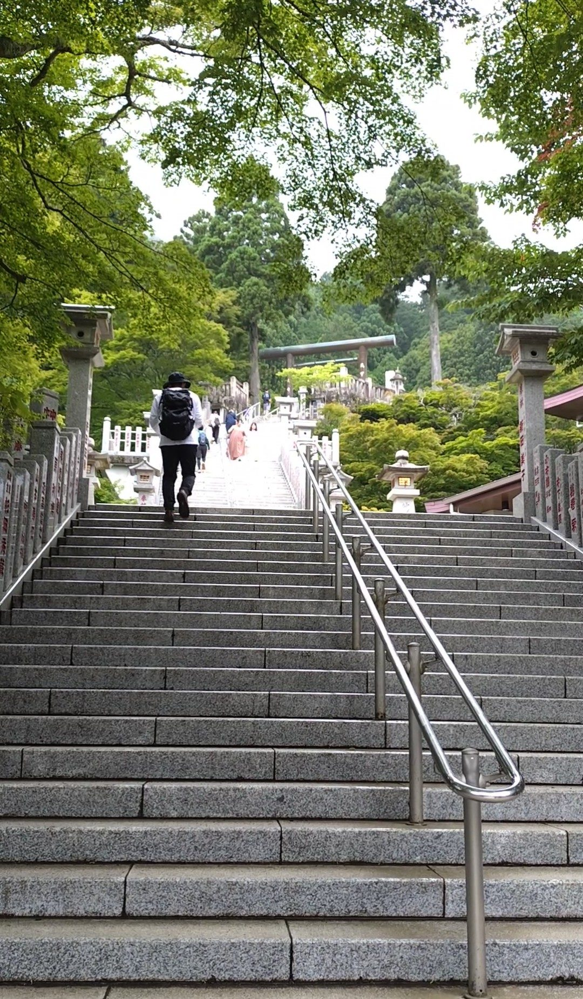
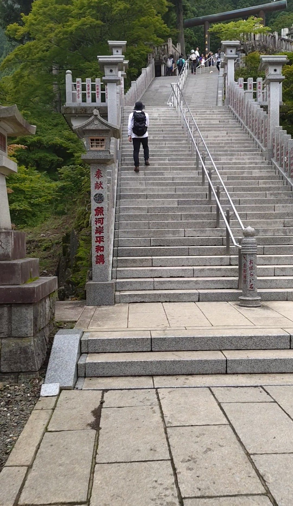
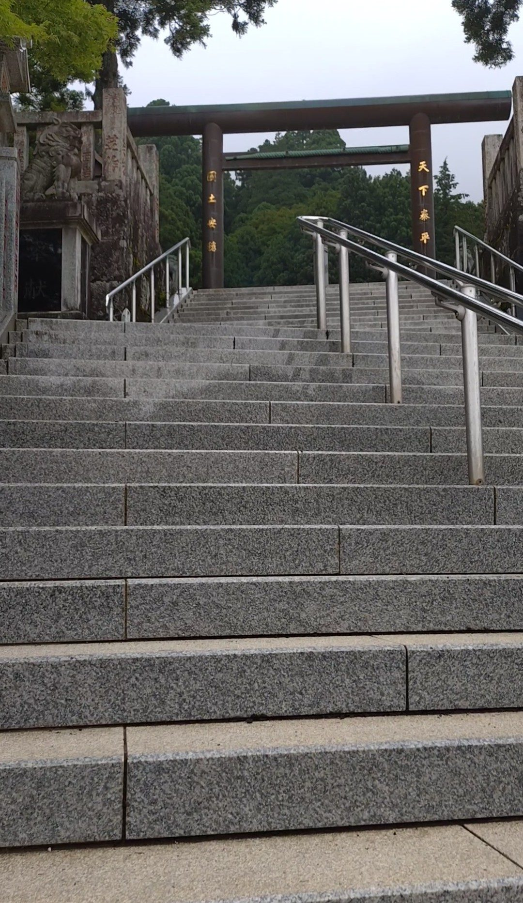
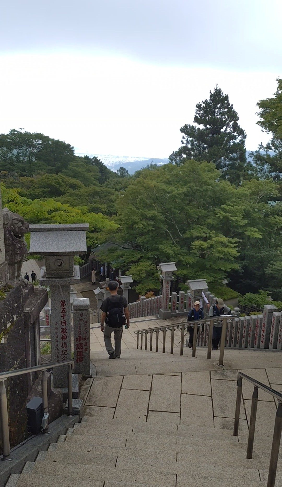
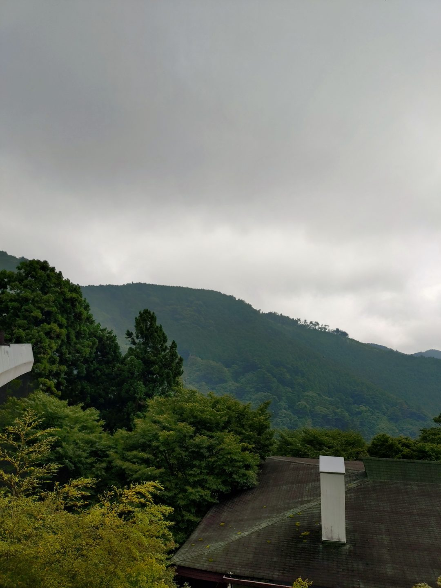
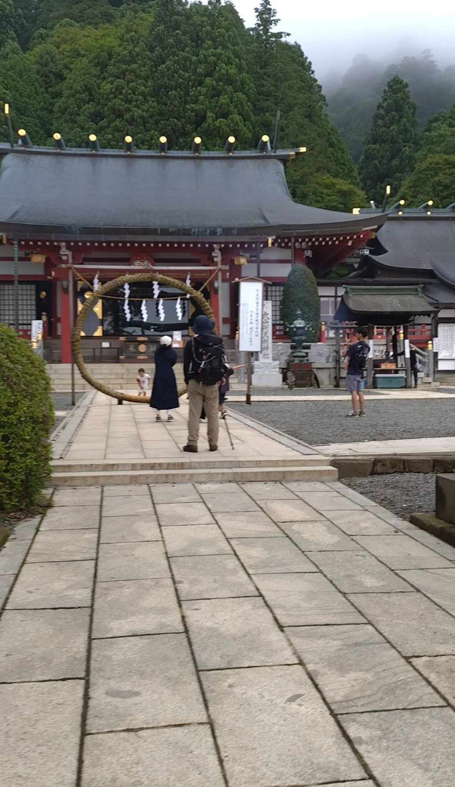

こま参道を歩き、男坂か女坂（またはケーブルカー）を経由すると、大山阿夫利神社の下社に到着します。下社にも立派な108段の石段があります。神奈川中央交通バスのバス停「大山ケーブル」からこま参道と登山ルートを合わせて徒歩約30分。白い石段、自然の緑、茶色の鳥居と落ち着いた色合いの本殿——すべてが周囲と調和していて、山の中の神社らしい静けさと格式を感じさせる石段でした。
神奈川中央交通バス「大山ケーブル」バス停下車、こま参道・男坂または女坂を経由して徒歩約30分。ケーブルカー（有料）を利用すればより短時間でアクセスできます。
石段の段差は標準的で登りやすい設計です。ただし山の中にあるため、雨上がりは石段が滑りやすくなります。グリップのある靴を忘れずに。こま参道・男坂または女坂を経由する場合はそちらの装備も必要です。
男坂・女坂を登り切って下社のエリアに入ると、石段の入口が視界に広がります。白い石段、両脇の緑の木々、その奥に茶色の鳥居が見える——この3色の組み合わせがとても自然で、山の中の神社としての調和を感じます。入口の時点ですでに頂上の鳥居が見えていて、開放感があります。

石段を登り始めると、両脇に灯篭が並んでいます。昼間の今は明かりがついていませんが、夕方になればライトアップされるのだろうか、と思わず想像してしまいました。夜や夕方の時間帯に訪れたらまた違う表情が見られそうです。

頂上に近づくにつれて、茶色の鳥居が大きくなってきます。周囲の木々の色と鳥居の色が溶け合うように調和していて、自然の中に置かれた建造物が浮いて見えない、静かな美しさがあります。

108段を登り切って後ろを振り返ると、遠くまで山の景色が広がります。こま参道の賑わいや男坂・女坂の急登を経てここまで来たのだということが、この眺めで改めて実感できます。ここが確かに山の中にある場所だということを、体感として受け取れる眺めです。


境内に入ると、本殿が目に入ります。派手な朱色ではなく、落ち着いた色合いです。石段の白、木々の緑、鳥居の茶、そしてこの本殿の色——すべてが大げさにならず、山の環境に溶け込むように設えられているように感じました。調和を大切にした場所なのだな、ということを改めて感じた神社でした。
